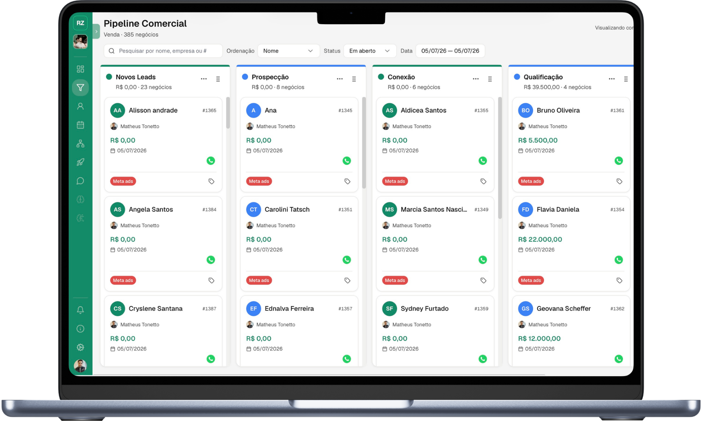

Odontologia
Odontologia
Clínica Vitalis
+R$ 50kEm faturamento
5 diasPara o primeiro resultado
Seu time não vende menos por falta de esforço, e sim de tempo. O Rezult é o CRM ativo que qualifica, faz follow-up, organiza o pipeline e devolve o lead quente para o time fechar.

Operações que já rodam no Rezult
Odontologia
Clínica Vitalis
 Consultoria
Consultoria
Grupo Adhera
 Agência
Agência
Estúdio Nove
 Imobiliária
Imobiliária
Prime Imóveis
 Infoproduto
Infoproduto
Método Ápice
 E-commerce
E-commerce
Bello Store
Essas seis cenas acontecem em quase todo comercial que roda no WhatsApp. Não é falha de time, é o que um CRM que só registra deixa passar. Marque as que acontecem no seu.
Marque as cenas que acontecem no seu comercial.
Começar 7 dias grátisNada disso é indisciplina do time. É que o seu CRM só registra o que alguém digitou, e quem deveria digitar está vendendo.
22:04 de uma terça. A mesma mensagem chega nos dois.
O CRM registra. Quem tem que agir continua sendo o seu time.
A conversa avança. Seu time recebe o lead pronto para vender.
Quatro agentes fazem o trabalho em volta da venda, no seu tom de voz e com as suas regras. Quem fecha é o seu time.
Conversa no tom da sua empresa, com a sua base de conhecimento, e descobre o que o cliente quer antes de alguém do seu time precisar entrar.
Cada contato passa pelos critérios que você definiu. Quem está pronto ganha reunião marcada na agenda do seu time. Quem ainda não está continua sendo trabalhado, em vez de ser esquecido.
Acompanha cada proposta enviada, faz o follow-up que ninguém lembra de fazer e devolve a conversa ao seu vendedor na hora da decisão.
Cada conversa vira registro, anotação e etapa do funil, sozinha.
Responde na hora, no tom da sua marca, e descobre o que o cliente precisa antes de alguém do time entrar.
Aplica os seus critérios de qualificação, agenda reunião com quem está pronto e mantém o resto em aquecimento.
Acompanha cada proposta, faz o follow-up que ninguém lembra e devolve a conversa ao vendedor na hora da decisão.
Transforma cada conversa em registro, anotação e etapa do funil, sem ninguém precisar clicar.
O Rezult foi desenhado para acompanhar o crescimento do seu negócio. Avançando no ritmo que sua operação exigir.
Seu time atende como sempre atendeu. O Rezult fica atrás, anotando a conversa, preenchendo os campos do contato e movendo o lead de etapa. Ninguém muda de rotina e o CRM para de ficar vazio.
O Rezult responde no minuto em que o lead entra. Qualifica quem tem perfil de compra e já marca a reunião na agenda do seu time. Seu vendedor entra em chamada só com lead quente.
Os agentes cuidam da rotina comercial 24 horas por dia: respondem, qualificam, agendam e fazem o follow-up das propostas. Seu time entra só nas conversas que exigem julgamento.
Excelente 5.0
Um cliente saiu de 40 para 120 reuniões por mês. Sem contratar mais ninguém.
"A IA qualifica os leads enquanto a gente dorme. Chegamos de manhã com o pipeline cheio de lead quente. Mudou nosso jogo."
"Matrícula não espera segunda-feira. O agente responde às 22h e no dia seguinte a secretaria já tem a reunião na agenda. Dobramos as matrículas no semestre."
"Lancei para 4 mil leads sendo eu e mais dois. A IA qualificou tudo e sobrou para a gente só quem estava pronto para comprar."
"Saímos de 3 ferramentas pra uma. Nosso ROAS subiu 40% só por não perder lead no meio do caminho."
"A gente perdia paciente porque ninguém respondia no fim de semana. Hoje a agenda enche sozinha e a recepção só confirma."
"12 unidades, 12 números de WhatsApp, um só painel. Vejo o funil de todas sem pedir relatório para ninguém."
"O time de vendas finalmente para de copiar e colar mensagem. Atendemos 3x mais lead com a mesma equipe."
"Eu odiava preencher CRM e simplesmente não preenchia. Agora a conversa vira anotação sozinha e eu só leio antes da call."
"Nosso ciclo é longo e o follow-up sempre furava. O agente não esquece: 40% menos tempo até a proposta."
"Passei de 40 para 120 reuniões por mês sem contratar mais ninguém para o time."
"Testei os 7 dias sem cartão, migrei a base inteira no primeiro dia e não voltei mais para o CRM antigo."
"O time inteiro atende do mesmo lugar. Acabou o "quem falou com esse cliente?" no meio do expediente."
O número da sua empresa, com o time inteiro atendendo dentro dele. O cliente vê uma conversa só; você vê quem respondeu, quando e o que ficou combinado.

Fala com a sua base inteira sem tirar ninguém do time para isso. Você filtra quem recebe, define o ritmo e acompanha contato por contato.

Arraste blocos e o que se repete todo dia passa a acontecer sozinho, no horário certo.

O funil com as suas etapas, e o card andando sozinho conforme a conversa avança.

O número existe porque o CRM registrou sozinho. Você abre e vê onde a operação está, sem pedir atualização para ninguém.

Teste por 7 dias grátis. Sem cartão e sem passar por vendedor.
Conecte o número da sua empresa ao Rezult para centralizar as conversas do time.
Você define o que cada um faz, o tom que usa e até onde vai. Sem fluxograma e sem código.
Depois do briefing e da configuração, o Rezult atende, qualifica e agenda com tudo registrado no funil.
As perguntas que importam antes de colocar sua operação de vendas dentro do Rezult CRM.
Veja como o Rezult se adapta à sua operação e avance no seu ritmo.